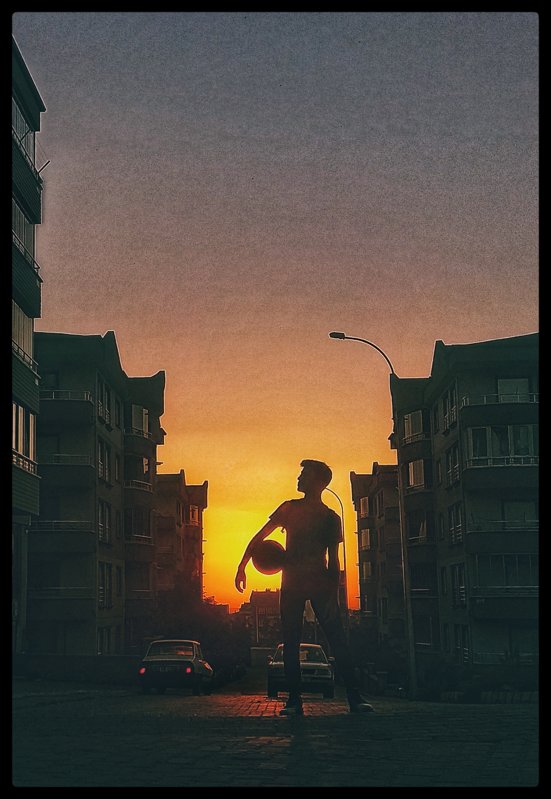

Hakkımda
Adım Zekeriyya Yunus Sönmez. 2001 yılında Nevşehir Merkez'de doğdum. Aslen Kayseriliyim fakat Nevşehir'de yaşamaktayız.
Nevşehir Anadolu Lisesi'nden mezun oldum ve Sakarya Üniversitesi Bilgisayar Mühendisliği Bölümü'nde okuyorum.
Mesleğimde en iyi yerlere gelmek ve bir mühendis olarak insanları mutlu edecek ya da hayatlarını kolaylaştıracak projelerde
yer almak istiyorum. Bu yönde gelişebilmek için ileride yurt dışında kendimi geliştirmek ve başka insanlarla da iletişim kurarak kendimi
bu yönde eğitmek düşüncesindeyim.
Hobilerim ve Uğraşlarım
Kendimi geliştirmeyi seviyorum. Bu yüzden kendimi geliştirebileceğimi hissettiğim ve beni mutlu edecek hobiler ediniyorum ve hobilerim arasında en büyük yeri spor tutuyor. Kendimi geliştirmeyi sevdiğim için tek bir spor branşına bağlı kalmayıp sporun birçok dalıyla uğraşıyorum. Fakat basketbol ve futbol oynamak diğer branşlara göre beni daha mutlu ediyor. Basketbolda 3 yıl , futbolda 2 yıl okul takımında oynadım. Basketbol takımımızla il 2.'liğini kazandık. Uğraştığım başka bir spor branşı olan Oryantiring dalında ise il 3.'lüğü kazandım.
Sporla bedenimi geliştirmemin yanında kendimi düşünce , bilgi birikimi gibi yönlerden de geliştirebilmek için kitap okuyorum ve araştırmalar yapıyorum. İnsan ilişkileri ve psikolojilerini merak ettiğim için klasik romanlar ve psikoloji kitapları okumayı seviyorum.